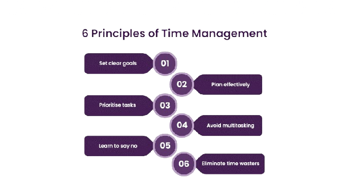

The NSHSS organization defines time management as "a crucial skill that involves the efficient and effective allocation of one's available time to accomplish tasks and achieve goals." It involves the skills of planning, organizing, and prioritizing in order to control the use of your free time. These skills help you manage the stress of the work as well as managing deadlines.
The NSHSS also claims that "at its core, time managment is about making deliberate choices about how to allocate your time based on the importance and urgency of tasks." It prevents time from being wasted and makes tasks more managable. The goal is to get rid of unhealthy habits such as procrastination or multi-tasking and form new healthier habits like prioritzing.
Additionally, the NSHSS states that time managment is important for five different reasons: it allows high productivity, promotes effective decision making, increases self discipline, increases work-life balance, and decreases stress. Moreover, the article talks about some easy ways to apply these skills into your life, asking them to "begin by setting clear goals and priorities, breaking tasks into manageable chunks, and creating a structured daily or weekly schedule." The article also advises using tools such as planners or calendars to easily stay organized.
